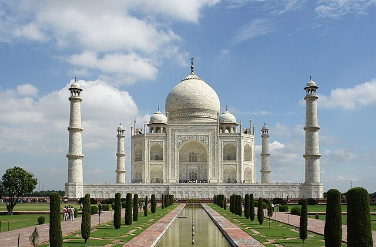

Тадж-Маха́л - мавзолей-мечеть, находящийся в Агре, Индия, на берегу реки Джамна. Построен по приказу падишаха империи Великих Моголов Шах-Джахана, в память о жене Мумтаз-Махал, умершей при родах четырнадцатого ребёнка. Позже в мавзолее был похоронен и сам Шах-Джахан.
Тадж-Махал (также «Тадж») считается лучшим примером архитектуры стиля моголов, который сочетает в себе элементы индийского, персидского и арабского архитектурных стилей. В 1983 году Тадж-Махал был назван объектом Всемирного наследия ЮНЕСКО: «жемчужиной мусульманского искусства в Индии и одним из всеми признанных шедевров всемирного наследия».
Несмотря на то, что белый мраморный купол мавзолея является наиболее известным компонентом, Тадж-Махал — это структурно интегрированный комплекс. Здание начали строить примерно в 1632 году и завершили в 1653 году. Работали 20 тысяч ремесленников и мастеров. Руководство строительством Тадж-Махала было возложено на Совет архитекторов под имперским контролем, включая Дешенов-Ану, Макрамат Хана и Устада Ахмада Лахаури. Главным автором проекта обычно считают Лахаури. По другой версии, наиболее популярной среди гидов Тадж-Махала, одним из главных архитекторов был турок Иса Мухаммед Эфенди.
Внутри мавзолея расположены две гробницы — шаха и его жены. На самом деле место их захоронения находится ниже — строго под гробницами, под землёй. Время строительства относится примерно к 1630—1652 годам. Тадж-Махал представляет собой пятикупольное сооружение высотой 74 м на платформе, с 4 минаретами по углам (они слегка наклонены в сторону от усыпальницы для того, чтобы в случае разрушения не повредить её), к которому примыкает сад с фонтанами и бассейном. Общая площадь храмового комплекса составляет 17 гектаров.
Стены выложены из полированного полупрозрачного мрамора (привозившегося на строительство из города Макраны) с инкрустацией из самоцветов. Были использованы бирюза, агат, малахит, сердолик и др. Мрамор имеет такую особенность, что при ярком дневном свете он выглядит белым, на заре розовым, а в лунную ночь — серебристым.